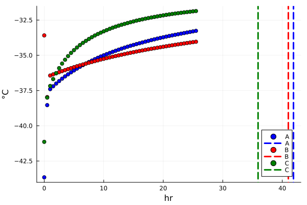
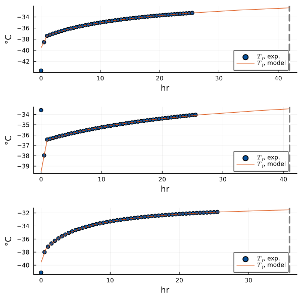

Imports
LyoPronto is this package. It reexports several other packages, so after using LyoPronto, you have effectively also done using Unitful and a few others.
using LyoProntoThese packages are used in the test suite, but you can use others in their place.
TypedTables provides a lightweight table structure, not as broadly flexible as a DataFrame but great for our needs.
using TypedTables, CSVTransformVariables provides tools for mapping optimization parameters to sensible ranges.
using TransformVariablesOptimization provides a common interface to a variety of optimization packages, including Optim. We import it with OptimizationOptimJL to specify Optim as a backend. LineSearches gives a little more granular control over solver algorithms for Optim.
using OptimizationOptimJL
using LineSearchesPlots is a frontend for several plotting packages, and its companion package StatsPlots has a very nice macro I like.
using Plots
using StatsPlots: @df
using LaTeXStringsAccessors provides the @set and @reset macros for making copies of parameter structs.
using AccessorsGet process data
At this stage, you would want to load in your experimental data, for this example, we will generate some synthetic data in order to focus on the fitting approach and assess its robustness. The scenario we will consider is this:
Three different formulations (A, B, and C) are lyophilized in the same lyophilizer, with the same vial, fill, and chamber pressure. As a result, $K_v$ should be the same for all three experiments, but $R_p$ is likely different for each.
# Vial geometry
# Ran with a 10mL vial, not strictly a 10R but with similar dimensions
ri, ro = get_vial_radii("10R")
Ap = π*ri^2
Av = π*ro^2
# Formulation parameters
csolid = 0.05u"g/mL" # g solute / mL solution
ρsolution = 1u"g/mL" # g/mL total solution density
# Fill
Vfill = 3u"mL"
hf0 = Vfill / Ap
# Cycle parameters
pch = RampedVariable(100u"mTorr") # constant pressure
T_shelf_0 = -40.0u"°C" # initial shelf temperature
T_shelf_final = -10.0u"°C" # final shelf temperature
ramp_rate = 0.5 *u"K/minute" # ramp rate
# Ramp for shelf temperature: convert to Kelvin because Celsius doesn't do math very well
Tsh = RampedVariable(uconvert.(u"K", [T_shelf_0, T_shelf_final]), ramp_rate)
# Alternate shelf ramp for third case
TshC = RampedVariable(uconvert.(u"K", [T_shelf_0, T_shelf_final+5u"K"]), 2*ramp_rate)
# For our synthetic cases, we will set values for Kv and Rp
Kv = ConstPhysProp(5.0u"W/m^2/K")
R0 = 0.8u"cm^2*Torr*hr/g"
A1 = 14.0u"cm*Torr*hr/g"
A2 = 1.0u"1/cm"
RpA = RpFormFit(R0, A1, A2)
RpB = RpFormFit(2R0, 0.5A1, 0.5A2)
RpC = RpFormFit(0.5R0, 2A1, 3A2)RpFormFit{}(0.4 hr cm^2 Torr g^-1, 28.0 hr cm Torr g^-1, 3.0 cm^-1)We will describe each case with a ParamObjPikal struct:
poA = ParamObjPikal((
(RpA, hf0, csolid, ρsolution),
(Kv, Av, Ap),
(pch, Tsh)
))
# The @set macro makes a copy of the struct with the specified field changed,
# so we can use it to make the other two cases.
poB = @set poA.Rp = RpB
poC = @set poA.Rp = RpC
# If we have other parameters to adjust between the cases, we can then use @reset.
@reset poC.Tsh = TshCParamObjPikal{}(RpFormFit{}(0.4 hr cm^2 Torr g^-1, 28.0 hr cm Torr g^-1, 3.0 cm^-1), 0.007891980649184893 mL mm^-2, 0.05 g mL^-1, 1 g mL^-1, ConstPhysProp(5.0 W K^-1 m^-2), 452.3893421169302 mm^2, 380.132711084365 mm^2, RampedVariable(100 mTorr), RampedVariable(Unitful.Quantity{Float64, 𝚯, Unitful.FreeUnits{(K,), 𝚯, nothing}}[233.14999999999998 K, 268.15 K], 1.0 K minute^-1))Now, we need to simulate our three synthetic experiments.
sols = [solve(ODEProblem(po), LyoPronto.odealg_chunk2) for po in [poA, poB, poC]]3-element Vector{ODESolution{Float64, 2, Vector{Vector{Float64}}, Nothing, Nothing, Vector{Float64}, Vector{Vector{Vector{Float64}}}, Nothing, ODEProblem{Vector{Float64}, Tuple{Float64, Float64}, true, ParamObjPikal{}, ODEFunction{true, SciMLBase.AutoSpecialize, FunctionWrappersWrappers.FunctionWrappersWrapper{Tuple{FunctionWrappers.FunctionWrapper{Nothing, Tuple{Vector{Float64}, Vector{Float64}, ParamObjPikal{}, Float64}}, FunctionWrappers.FunctionWrapper{Nothing, Tuple{Vector{ForwardDiff.Dual{ForwardDiff.Tag{DiffEqBase.OrdinaryDiffEqTag, Float64}, Float64, 2}}, Vector{ForwardDiff.Dual{ForwardDiff.Tag{DiffEqBase.OrdinaryDiffEqTag, Float64}, Float64, 2}}, ParamObjPikal{}, Float64}}, FunctionWrappers.FunctionWrapper{Nothing, Tuple{Vector{ForwardDiff.Dual{ForwardDiff.Tag{DiffEqBase.OrdinaryDiffEqTag, Float64}, Float64, 1}}, Vector{Float64}, ParamObjPikal{}, ForwardDiff.Dual{ForwardDiff.Tag{DiffEqBase.OrdinaryDiffEqTag, Float64}, Float64, 1}}}, FunctionWrappers.FunctionWrapper{Nothing, Tuple{Vector{ForwardDiff.Dual{ForwardDiff.Tag{DiffEqBase.OrdinaryDiffEqTag, Float64}, Float64, 2}}, Vector{ForwardDiff.Dual{ForwardDiff.Tag{DiffEqBase.OrdinaryDiffEqTag, Float64}, Float64, 2}}, ParamObjPikal{}, ForwardDiff.Dual{ForwardDiff.Tag{DiffEqBase.OrdinaryDiffEqTag, Float64}, Float64, 1}}}}, FunctionWrappersWrappers.AllowNonIsBits, FunctionWrappersWrappers.SingleCacheStorage}, LinearAlgebra.Diagonal{Float64, Vector{Float64}}, Nothing, Nothing, Nothing, Nothing, Nothing, Nothing, Nothing, Nothing, Nothing, Nothing, Nothing, Nothing, typeof(SciMLBase.DEFAULT_OBSERVED), Nothing, Nothing, Nothing, Nothing}, Base.Pairs{Symbol, Any, Nothing, @NamedTuple{tstops::Vector{Float64}, callback::ContinuousCallback{typeof(LyoPronto.end_cond), typeof(terminate!), typeof(terminate!), typeof(SciMLBase.INITIALIZE_DEFAULT), typeof(SciMLBase.FINALIZE_DEFAULT), Float64, Int64, Rational{Int64}, Nothing, Nothing, Int64, Tuple{}}, initializealg::BrownFullBasicInit{Float64, Nothing}}}, SciMLBase.StandardODEProblem}, Rodas4{ADTypes.AutoForwardDiff{2, ForwardDiff.Tag{DiffEqBase.OrdinaryDiffEqTag, Float64}}, Nothing, typeof(OrdinaryDiffEqCore.trivial_limiter!), typeof(OrdinaryDiffEqCore.trivial_limiter!), Nothing}, OrdinaryDiffEqCore.InterpolationData{ODEFunction{true, SciMLBase.AutoSpecialize, FunctionWrappersWrappers.FunctionWrappersWrapper{Tuple{FunctionWrappers.FunctionWrapper{Nothing, Tuple{Vector{Float64}, Vector{Float64}, ParamObjPikal{}, Float64}}, FunctionWrappers.FunctionWrapper{Nothing, Tuple{Vector{ForwardDiff.Dual{ForwardDiff.Tag{DiffEqBase.OrdinaryDiffEqTag, Float64}, Float64, 2}}, Vector{ForwardDiff.Dual{ForwardDiff.Tag{DiffEqBase.OrdinaryDiffEqTag, Float64}, Float64, 2}}, ParamObjPikal{}, Float64}}, FunctionWrappers.FunctionWrapper{Nothing, Tuple{Vector{ForwardDiff.Dual{ForwardDiff.Tag{DiffEqBase.OrdinaryDiffEqTag, Float64}, Float64, 1}}, Vector{Float64}, ParamObjPikal{}, ForwardDiff.Dual{ForwardDiff.Tag{DiffEqBase.OrdinaryDiffEqTag, Float64}, Float64, 1}}}, FunctionWrappers.FunctionWrapper{Nothing, Tuple{Vector{ForwardDiff.Dual{ForwardDiff.Tag{DiffEqBase.OrdinaryDiffEqTag, Float64}, Float64, 2}}, Vector{ForwardDiff.Dual{ForwardDiff.Tag{DiffEqBase.OrdinaryDiffEqTag, Float64}, Float64, 2}}, ParamObjPikal{}, ForwardDiff.Dual{ForwardDiff.Tag{DiffEqBase.OrdinaryDiffEqTag, Float64}, Float64, 1}}}}, FunctionWrappersWrappers.AllowNonIsBits, FunctionWrappersWrappers.SingleCacheStorage}, LinearAlgebra.Diagonal{Float64, Vector{Float64}}, Nothing, Nothing, Nothing, Nothing, Nothing, Nothing, Nothing, Nothing, Nothing, Nothing, Nothing, Nothing, typeof(SciMLBase.DEFAULT_OBSERVED), Nothing, Nothing, Nothing, Nothing}, Vector{Vector{Float64}}, Vector{Float64}, Vector{Vector{Vector{Float64}}}, Nothing, OrdinaryDiffEqRosenbrock.RosenbrockCache{Vector{Float64}, Vector{Float64}, Float64, Vector{Float64}, Matrix{Float64}, Matrix{Float64}, OrdinaryDiffEqRosenbrockTableaus.RodasTableau{Float64, Float64, Vector{Float64}}, SciMLBase.TimeGradientWrapper{true, ODEFunction{true, SciMLBase.AutoSpecialize, FunctionWrappersWrappers.FunctionWrappersWrapper{Tuple{FunctionWrappers.FunctionWrapper{Nothing, Tuple{Vector{Float64}, Vector{Float64}, ParamObjPikal{}, Float64}}, FunctionWrappers.FunctionWrapper{Nothing, Tuple{Vector{ForwardDiff.Dual{ForwardDiff.Tag{DiffEqBase.OrdinaryDiffEqTag, Float64}, Float64, 2}}, Vector{ForwardDiff.Dual{ForwardDiff.Tag{DiffEqBase.OrdinaryDiffEqTag, Float64}, Float64, 2}}, ParamObjPikal{}, Float64}}, FunctionWrappers.FunctionWrapper{Nothing, Tuple{Vector{ForwardDiff.Dual{ForwardDiff.Tag{DiffEqBase.OrdinaryDiffEqTag, Float64}, Float64, 1}}, Vector{Float64}, ParamObjPikal{}, ForwardDiff.Dual{ForwardDiff.Tag{DiffEqBase.OrdinaryDiffEqTag, Float64}, Float64, 1}}}, FunctionWrappers.FunctionWrapper{Nothing, Tuple{Vector{ForwardDiff.Dual{ForwardDiff.Tag{DiffEqBase.OrdinaryDiffEqTag, Float64}, Float64, 2}}, Vector{ForwardDiff.Dual{ForwardDiff.Tag{DiffEqBase.OrdinaryDiffEqTag, Float64}, Float64, 2}}, ParamObjPikal{}, ForwardDiff.Dual{ForwardDiff.Tag{DiffEqBase.OrdinaryDiffEqTag, Float64}, Float64, 1}}}}, FunctionWrappersWrappers.AllowNonIsBits, FunctionWrappersWrappers.SingleCacheStorage}, LinearAlgebra.Diagonal{Float64, Vector{Float64}}, Nothing, Nothing, Nothing, Nothing, Nothing, Nothing, Nothing, Nothing, Nothing, Nothing, Nothing, Nothing, typeof(SciMLBase.DEFAULT_OBSERVED), Nothing, Nothing, Nothing, Nothing}, Vector{Float64}, ParamObjPikal{}}, SciMLBase.UJacobianWrapper{true, ODEFunction{true, SciMLBase.AutoSpecialize, FunctionWrappersWrappers.FunctionWrappersWrapper{Tuple{FunctionWrappers.FunctionWrapper{Nothing, Tuple{Vector{Float64}, Vector{Float64}, ParamObjPikal{}, Float64}}, FunctionWrappers.FunctionWrapper{Nothing, Tuple{Vector{ForwardDiff.Dual{ForwardDiff.Tag{DiffEqBase.OrdinaryDiffEqTag, Float64}, Float64, 2}}, Vector{ForwardDiff.Dual{ForwardDiff.Tag{DiffEqBase.OrdinaryDiffEqTag, Float64}, Float64, 2}}, ParamObjPikal{}, Float64}}, FunctionWrappers.FunctionWrapper{Nothing, Tuple{Vector{ForwardDiff.Dual{ForwardDiff.Tag{DiffEqBase.OrdinaryDiffEqTag, Float64}, Float64, 1}}, Vector{Float64}, ParamObjPikal{}, ForwardDiff.Dual{ForwardDiff.Tag{DiffEqBase.OrdinaryDiffEqTag, Float64}, Float64, 1}}}, FunctionWrappers.FunctionWrapper{Nothing, Tuple{Vector{ForwardDiff.Dual{ForwardDiff.Tag{DiffEqBase.OrdinaryDiffEqTag, Float64}, Float64, 2}}, Vector{ForwardDiff.Dual{ForwardDiff.Tag{DiffEqBase.OrdinaryDiffEqTag, Float64}, Float64, 2}}, ParamObjPikal{}, ForwardDiff.Dual{ForwardDiff.Tag{DiffEqBase.OrdinaryDiffEqTag, Float64}, Float64, 1}}}}, FunctionWrappersWrappers.AllowNonIsBits, FunctionWrappersWrappers.SingleCacheStorage}, LinearAlgebra.Diagonal{Float64, Vector{Float64}}, Nothing, Nothing, Nothing, Nothing, Nothing, Nothing, Nothing, Nothing, Nothing, Nothing, Nothing, Nothing, typeof(SciMLBase.DEFAULT_OBSERVED), Nothing, Nothing, Nothing, Nothing}, Float64, ParamObjPikal{}}, LinearSolve.LinearCache{Matrix{Float64}, Vector{Float64}, Vector{Float64}, Tuple{Nothing, Vector{Float64}, ParamObjPikal{}, Float64}, LinearSolve.DefaultLinearSolver, LinearSolve.DefaultLinearSolverInit{LinearAlgebra.LU{Float64, Matrix{Float64}, Vector{Int64}}, LinearAlgebra.QRCompactWY{Float64, Matrix{Float64}, Matrix{Float64}}, Nothing, Nothing, Nothing, Nothing, Nothing, Nothing, Tuple{LinearAlgebra.LU{Float64, Matrix{Float64}, Vector{Int64}}, Vector{Int64}}, Tuple{LinearAlgebra.LU{Float64, Matrix{Float64}, Vector{Int64}}, Vector{Int64}}, Nothing, Nothing, Nothing, LinearAlgebra.SVD{Float64, Float64, Matrix{Float64}, Vector{Float64}}, LinearAlgebra.Cholesky{Float64, Matrix{Float64}}, LinearAlgebra.Cholesky{Float64, Matrix{Float64}}, Tuple{LinearAlgebra.LU{Float64, Matrix{Float64}, Vector{Int32}}, Base.RefValue{Int32}}, Tuple{LinearAlgebra.LU{Float64, Matrix{Float64}, Vector{Int64}}, Base.RefValue{Int64}}, LinearAlgebra.QRPivoted{Float64, Matrix{Float64}, Vector{Float64}, Vector{Int64}}, Nothing, Nothing, Nothing, Nothing, Nothing, Nothing, Matrix{Float64}, Vector{Float64}, Nothing}, IdentityOperator, IdentityOperator, Float64, LinearSolve.LinearVerbosity{true}, Bool, LinearSolve.LinearSolveAdjoint{Missing}, Nothing}, Tuple{DifferentiationInterfaceForwardDiffExt.ForwardDiffTwoArgJacobianPrep{Nothing, ForwardDiff.JacobianConfig{ForwardDiff.Tag{DiffEqBase.OrdinaryDiffEqTag, Float64}, Float64, 2, Tuple{Vector{ForwardDiff.Dual{ForwardDiff.Tag{DiffEqBase.OrdinaryDiffEqTag, Float64}, Float64, 2}}, Vector{ForwardDiff.Dual{ForwardDiff.Tag{DiffEqBase.OrdinaryDiffEqTag, Float64}, Float64, 2}}}}, Tuple{}}, DifferentiationInterfaceForwardDiffExt.ForwardDiffTwoArgJacobianPrep{Nothing, ForwardDiff.JacobianConfig{ForwardDiff.Tag{DiffEqBase.OrdinaryDiffEqTag, Float64}, Float64, 2, Tuple{Vector{ForwardDiff.Dual{ForwardDiff.Tag{DiffEqBase.OrdinaryDiffEqTag, Float64}, Float64, 2}}, Vector{ForwardDiff.Dual{ForwardDiff.Tag{DiffEqBase.OrdinaryDiffEqTag, Float64}, Float64, 2}}}}, Tuple{}}}, Tuple{DifferentiationInterfaceForwardDiffExt.ForwardDiffTwoArgDerivativePrep{Tuple{SciMLBase.TimeGradientWrapper{true, ODEFunction{true, SciMLBase.AutoSpecialize, FunctionWrappersWrappers.FunctionWrappersWrapper{Tuple{FunctionWrappers.FunctionWrapper{Nothing, Tuple{Vector{Float64}, Vector{Float64}, ParamObjPikal{}, Float64}}, FunctionWrappers.FunctionWrapper{Nothing, Tuple{Vector{ForwardDiff.Dual{ForwardDiff.Tag{DiffEqBase.OrdinaryDiffEqTag, Float64}, Float64, 2}}, Vector{ForwardDiff.Dual{ForwardDiff.Tag{DiffEqBase.OrdinaryDiffEqTag, Float64}, Float64, 2}}, ParamObjPikal{}, Float64}}, FunctionWrappers.FunctionWrapper{Nothing, Tuple{Vector{ForwardDiff.Dual{ForwardDiff.Tag{DiffEqBase.OrdinaryDiffEqTag, Float64}, Float64, 1}}, Vector{Float64}, ParamObjPikal{}, ForwardDiff.Dual{ForwardDiff.Tag{DiffEqBase.OrdinaryDiffEqTag, Float64}, Float64, 1}}}, FunctionWrappers.FunctionWrapper{Nothing, Tuple{Vector{ForwardDiff.Dual{ForwardDiff.Tag{DiffEqBase.OrdinaryDiffEqTag, Float64}, Float64, 2}}, Vector{ForwardDiff.Dual{ForwardDiff.Tag{DiffEqBase.OrdinaryDiffEqTag, Float64}, Float64, 2}}, ParamObjPikal{}, ForwardDiff.Dual{ForwardDiff.Tag{DiffEqBase.OrdinaryDiffEqTag, Float64}, Float64, 1}}}}, FunctionWrappersWrappers.AllowNonIsBits, FunctionWrappersWrappers.SingleCacheStorage}, LinearAlgebra.Diagonal{Float64, Vector{Float64}}, Nothing, Nothing, Nothing, Nothing, Nothing, Nothing, Nothing, Nothing, Nothing, Nothing, Nothing, Nothing, typeof(SciMLBase.DEFAULT_OBSERVED), Nothing, Nothing, Nothing, Nothing}, Vector{Float64}, ParamObjPikal{}}, Vector{Float64}, ADTypes.AutoForwardDiff{2, ForwardDiff.Tag{DiffEqBase.OrdinaryDiffEqTag, Float64}}, Float64, Tuple{}}, Float64, ForwardDiff.DerivativeConfig{ForwardDiff.Tag{DiffEqBase.OrdinaryDiffEqTag, Float64}, Vector{ForwardDiff.Dual{ForwardDiff.Tag{DiffEqBase.OrdinaryDiffEqTag, Float64}, Float64, 1}}}, Tuple{}}, DifferentiationInterfaceForwardDiffExt.ForwardDiffTwoArgDerivativePrep{Tuple{SciMLBase.TimeGradientWrapper{true, ODEFunction{true, SciMLBase.AutoSpecialize, FunctionWrappersWrappers.FunctionWrappersWrapper{Tuple{FunctionWrappers.FunctionWrapper{Nothing, Tuple{Vector{Float64}, Vector{Float64}, ParamObjPikal{}, Float64}}, FunctionWrappers.FunctionWrapper{Nothing, Tuple{Vector{ForwardDiff.Dual{ForwardDiff.Tag{DiffEqBase.OrdinaryDiffEqTag, Float64}, Float64, 2}}, Vector{ForwardDiff.Dual{ForwardDiff.Tag{DiffEqBase.OrdinaryDiffEqTag, Float64}, Float64, 2}}, ParamObjPikal{}, Float64}}, FunctionWrappers.FunctionWrapper{Nothing, Tuple{Vector{ForwardDiff.Dual{ForwardDiff.Tag{DiffEqBase.OrdinaryDiffEqTag, Float64}, Float64, 1}}, Vector{Float64}, ParamObjPikal{}, ForwardDiff.Dual{ForwardDiff.Tag{DiffEqBase.OrdinaryDiffEqTag, Float64}, Float64, 1}}}, FunctionWrappers.FunctionWrapper{Nothing, Tuple{Vector{ForwardDiff.Dual{ForwardDiff.Tag{DiffEqBase.OrdinaryDiffEqTag, Float64}, Float64, 2}}, Vector{ForwardDiff.Dual{ForwardDiff.Tag{DiffEqBase.OrdinaryDiffEqTag, Float64}, Float64, 2}}, ParamObjPikal{}, ForwardDiff.Dual{ForwardDiff.Tag{DiffEqBase.OrdinaryDiffEqTag, Float64}, Float64, 1}}}}, FunctionWrappersWrappers.AllowNonIsBits, FunctionWrappersWrappers.SingleCacheStorage}, LinearAlgebra.Diagonal{Float64, Vector{Float64}}, Nothing, Nothing, Nothing, Nothing, Nothing, Nothing, Nothing, Nothing, Nothing, Nothing, Nothing, Nothing, typeof(SciMLBase.DEFAULT_OBSERVED), Nothing, Nothing, Nothing, Nothing}, Vector{Float64}, ParamObjPikal{}}, Vector{Float64}, ADTypes.AutoForwardDiff{2, ForwardDiff.Tag{DiffEqBase.OrdinaryDiffEqTag, Float64}}, Float64, Tuple{}}, Float64, ForwardDiff.DerivativeConfig{ForwardDiff.Tag{DiffEqBase.OrdinaryDiffEqTag, Float64}, Vector{ForwardDiff.Dual{ForwardDiff.Tag{DiffEqBase.OrdinaryDiffEqTag, Float64}, Float64, 1}}}, Tuple{}}}, Float64, Rodas4{ADTypes.AutoForwardDiff{2, ForwardDiff.Tag{DiffEqBase.OrdinaryDiffEqTag, Float64}}, Nothing, typeof(OrdinaryDiffEqCore.trivial_limiter!), typeof(OrdinaryDiffEqCore.trivial_limiter!), Nothing}, typeof(OrdinaryDiffEqCore.trivial_limiter!), typeof(OrdinaryDiffEqCore.trivial_limiter!), OrdinaryDiffEqRosenbrock.JacReuseState{Float64, Matrix{Float64}, Vector{Float64}, Matrix{Float64}}}, BitVector}, SciMLBase.DEStats, Nothing, Nothing, Nothing, Nothing}}:
[0.7891980649184893 0.7891980649181298 … 0.16392955543222254 1.0000001084769973e-10; 233.62063342238505 233.62063546764688 … 240.33342674810726 240.7467856597082]
[0.7891980649184893 0.7891980649181469 … 0.1841418760571655 1.0000001333782279e-10; 233.62065428128963 233.6206576562651 … 239.41581018367145 239.83836718972333]
[0.7891980649184893 0.7891980649181092 … 0.05910275528399475 1.0000004962821113e-10; 233.62062219159586 233.62062485023642 … 241.56281469745431 241.6325342872245]Next, load our synthetic data into structs that communicate the fitting problem
t = range(0.0u"hr", stop=minimum([sol.t[end]-10 for sol in sols])*u"hr", step=30u"minute")
t_ndim = ustrip.(u"hr", t)
fitdats = [PrimaryDryFit(t, (sol(t_ndim)[2,t_ndim.<sol.t[end]]*u"K",), t_end=sol.t[end]*u"hr") for sol in sols]
plot(u"hr", u"°C")
for (fd, name, color) in zip(fitdats, ["A", "B", "C"], [:blue, :red, :green])
plot!(fd, c=color, label=name)
end
plot!(legend=:bottomright)
Multi-experiment fitting
Now, we can set up a multi-experiment fitting problem. The idea is that we will fit the three experiments simultaneously, with a single $K_v$ and three different $R_p$ values. To express this, we will use the TransformVariables package to create a transformation that maps a flat vector of numbers to this set of parameters, grouped by experiment. LyoPronto provides a function objn_pd that will apply this transform, then map the parameters to a ParamObjPikal for each experiment, and then solve the ODEs and return the objective function value.
# First, a transformation that maps 3 numbers to Rp. LyoPronto provides a convenience function
trans_Rp = Rp_transform_basic(0.75R0, 0.75A1, 0.75A2)
# Next, a transformation that maps 1 number to Kv. Another convenience function here
trans_K = K_transform_basic(Kv.val)
shared_trans = as((separate = as(Vector, trans_Rp, 3),
shared = trans_K,
))
p0 = zeros(TransformVariables.dimension(shared_trans)) # Initial guess for optimization parameters
objnf_pd = OptimizationFunction((x,y)->LyoPronto.objn_pd(x,y,tweight=5e-2), AutoForwardDiff())
all_po = (poA, poB, poC)(ParamObjPikal{}(RpFormFit{}(0.8 hr cm^2 Torr g^-1, 14.0 hr cm Torr g^-1, 1.0 cm^-1), 0.007891980649184893 mL mm^-2, 0.05 g mL^-1, 1 g mL^-1, ConstPhysProp(5.0 W K^-1 m^-2), 452.3893421169302 mm^2, 380.132711084365 mm^2, RampedVariable(100 mTorr), RampedVariable(Unitful.Quantity{Float64, 𝚯, Unitful.FreeUnits{(K,), 𝚯, nothing}}[233.14999999999998 K, 263.15 K], 0.5 K minute^-1)), ParamObjPikal{}(RpFormFit{}(1.6 hr cm^2 Torr g^-1, 7.0 hr cm Torr g^-1, 0.5 cm^-1), 0.007891980649184893 mL mm^-2, 0.05 g mL^-1, 1 g mL^-1, ConstPhysProp(5.0 W K^-1 m^-2), 452.3893421169302 mm^2, 380.132711084365 mm^2, RampedVariable(100 mTorr), RampedVariable(Unitful.Quantity{Float64, 𝚯, Unitful.FreeUnits{(K,), 𝚯, nothing}}[233.14999999999998 K, 263.15 K], 0.5 K minute^-1)), ParamObjPikal{}(RpFormFit{}(0.4 hr cm^2 Torr g^-1, 28.0 hr cm Torr g^-1, 3.0 cm^-1), 0.007891980649184893 mL mm^-2, 0.05 g mL^-1, 1 g mL^-1, ConstPhysProp(5.0 W K^-1 m^-2), 452.3893421169302 mm^2, 380.132711084365 mm^2, RampedVariable(100 mTorr), RampedVariable(Unitful.Quantity{Float64, 𝚯, Unitful.FreeUnits{(K,), 𝚯, nothing}}[233.14999999999998 K, 268.15 K], 1.0 K minute^-1)))We need to give all of the parameters, experiments, and this transformation to the problem:
tpf = (shared_trans, all_po, fitdats)
optalg = LBFGS(linesearch=LineSearches.BackTracking())
opt = solve(OptimizationProblem(objnf_pd, p0, tpf), optalg)retcode: Success
u: 10-element Vector{Float64}:
0.31939322953992744
0.25453669402072826
0.18792313931911592
0.9478780574180278
-0.28775927682206975
0.07200816371099707
-0.44733321336282583
0.9929619763206099
1.4021434935758663
-0.0003468897746578964Note that the results of this optimization problem are in a log space: we will have to transform them back to our problem coordinates with the transformation we constructed.
In practice, we generally want to compare the fit to the "experiment".
fitsols = gen_nsol_pd(opt.u, shared_trans, all_po)
pls = map(fitsols, fitdats) do fitted, exp
plot(u"hr", u"degC")
plot!(exp)
modconvtplot!(fitted)
end
plot(pls..., layout=(3,1), legend=:bottomright, size=(600,600))
Finally, let's check how close the fitted values are to the true values.
fit = transform(shared_trans, opt.u)
println("Kv = $(fit.shared.Kshf.val)")
tab = map((RpA,RpB,RpC), fit.separate) do orig, fitted
R0_o = orig.R0
A1_o = orig.A1
A2_o = orig.A2
R0_f = fitted.Rp.R0
A1_f = fitted.Rp.A1
A2_f = fitted.Rp.A2
return (;R0_o, R0_f, A1_o, A1_f, A2_o, A2_f)
end
using PrettyTables
pretty_table(HTML, Table(tab))| R0_o | R0_f | A1_o | A1_f | A2_o | A2_f |
|---|---|---|---|---|---|
| Unitful.Quantity{Float64, 𝐋 𝐓^-1, Unitful.FreeUnits{(g^-1, hr, cm^2, Torr), 𝐋 𝐓^-1, nothing}} | Unitful.Quantity{Float64, 𝐋 𝐓^-1, Unitful.FreeUnits{(g^-1, hr, cm^2, Torr), 𝐋 𝐓^-1, nothing}} | Unitful.Quantity{Float64, 𝐓^-1, Unitful.FreeUnits{(g^-1, hr, cm, Torr), 𝐓^-1, nothing}} | Unitful.Quantity{Float64, 𝐓^-1, Unitful.FreeUnits{(g^-1, hr, cm, Torr), 𝐓^-1, nothing}} | Unitful.Quantity{Float64, 𝐋^-1, Unitful.FreeUnits{(cm^-1,), 𝐋^-1, nothing}} | Unitful.Quantity{Float64, 𝐋^-1, Unitful.FreeUnits{(cm^-1,), 𝐋^-1, nothing}} |
| 0.8 hr cm^2 Torr g^-1 | 0.825775 hr cm^2 Torr g^-1 | 14.0 hr cm Torr g^-1 | 13.5436 hr cm Torr g^-1 | 1.0 cm^-1 | 0.905056 cm^-1 |
| 1.6 hr cm^2 Torr g^-1 | 1.54814 hr cm^2 Torr g^-1 | 7.0 hr cm Torr g^-1 | 7.87439 hr cm Torr g^-1 | 0.5 cm^-1 | 0.805998 cm^-1 |
| 0.4 hr cm^2 Torr g^-1 | 0.383599 hr cm^2 Torr g^-1 | 28.0 hr cm Torr g^-1 | 28.3418 hr cm Torr g^-1 | 3.0 cm^-1 | 3.04793 cm^-1 |
This page was generated using Literate.jl.